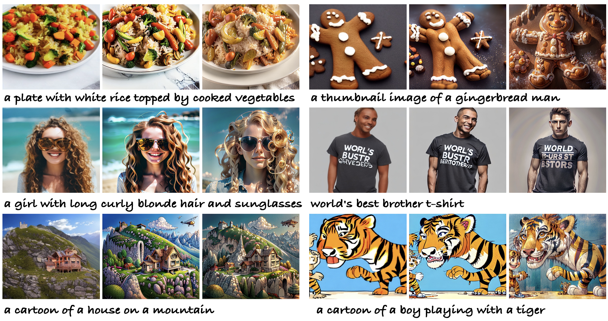

|
Department of Information Engineering The Chinese University of Hong Kong E-mail / CV / Google Scholar / Github / Twitter |

|
Full Publications [ Home ] (* indicates equal contribution)
| Selected / All by Year / 2D Generation / 3D Generation |

|
HyperHuman: Hyper-Realistic Human Generation with Latent Structural Diffusion
International Conference on Learning Representations (ICLR), 2024.
|

|
Audio-Driven Co-Speech Gesture Video Generation
Advances in Neural Information Processing Systems (NeurIPS), 2022. (Spotlight Presentation)
|

|
Learning Hierarchical Cross-Modal Association for Co-Speech Gesture Generation
IEEE/CVF Conference on Computer Vision and Pattern Recognition (CVPR), 2022.
Also appears at CVPR 2022 Sight and Sound Workshop. [5-min Invited Talk] (link)
|

|
Taming Diffusion Models for Audio-Driven Co-Speech Gesture Generation
IEEE/CVF Conference on Computer Vision and Pattern Recognition (CVPR), 2023.
|
|  |
TextCraft: Your Text Encoder Can be Image Quality Controller
IEEE/CVF Conference on Computer Vision and Pattern Recognition (CVPR), 2024.
CVPR 2024 /
More to come. Stay tuned!
|